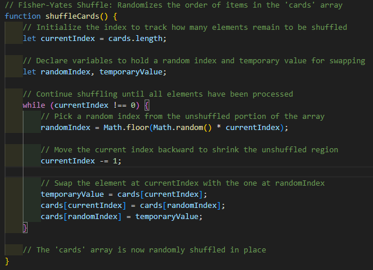

Work Process
My work process involves several key steps:
- Planning: I start by understanding the project requirements and defining the scope.
- Design: I create wireframes and design mockups to visualize the user interface.
- Development: I write clean, efficient code to bring the design to life.
- Testing: I thoroughly test the application to ensure it works as intended.
- Deployment: Finally, I deploy the application and monitor its performance.
Planning
In the planning phase, I gather requirements, define project goals, and create a roadmap for development.
This phase is crucial for setting a solid foundation for the project.
Effective planning helps in identifying potential challenges early and ensures a smoother development process.
For the Memory card matching game I define what the requirements are.
Here are the key requirements:
- Develop a card matching game with a grid layout.
- Only 2 cards can be revealed at the same time.
- Shuffle cards.
- Ensure the game is responsive and works on various devices.
- If cards don't match, they should flip back.
Design
In the design phase, I create wireframes and mockups to visualize the user interface.
This helps in aligning the design with user expectations and project goals.
Development
During the development phase, I write clean and efficient code to implement the design.
I focus on creating a responsive layout that works seamlessly across different devices.
For the Memory card matching game, I use HTML, CSS, and JavaScript to build the game logic and user interface.
I use the Fisher-Yates shuffle algorithm, a common method to shuffle the cards.
Testing
In the testing phase, I thoroughly test the application to ensure it works as intended.
I check for bugs, usability issues, and performance problems.
For the Memory card matching game, I test the game mechanics, responsiveness, and user interactions.
Deployment
Finally, I deploy the application and monitor its performance.
I ensure that the game is accessible to users and performs well on various devices.
For the Memory card matching game, I deploy it on GitHub Pages, making it available for users to play.